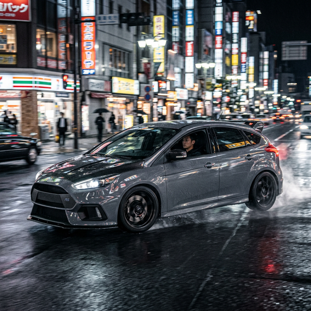

Otomobiller, tarih boyunca basit birer taşıma aracından çok daha fazlası olmuştur. Garajlardan yarış pistlerine, klasik restorasyonlardan modern tuning kültürüne kadar asla eskimeyen ve sürekli evrilen bir otomobil tutkusu var. Bu tutku, nesilleri bir araya getiren ve sokaklarda kendi dilini oluşturan evrensel bir mirastır.
Garaj Tutkusundan Yaşam Tarzına
Otomobil kültürü, yalnızca bir aracı kullanmakla ilgili değildir; onu anlamak, kişiselleştirmek ve onunla var olmak demektir. Haftasonu garajda geçirilen o uzun saatler, bir motoru diriltmenin verdiği o benzersiz his... Otomobil kültürü, metalik bir yığından ziyade mekanik bir ruhla bağ kurma sanatıdır. Her bir modifikasyon, sahibinin karakterini yansıtır.

Zamanı Aşan Estetik
Bugün otomobil dünyasında göz alıcı süper spor otomobiller veya ileri teknoloji elektrikli araçlar olsa da, geçmişin klasikleşmiş çizgilerine duyulan aşk hiçbir zaman sönmüyor. Farklı kültürler, coğrafyalar ve jenerasyonlar, otomobillere olan bu devasa tutkuyu kendi tarzlarıyla yeniden yorumluyor ve bu mirası yarına taşıyor.
"Bir otomobili özel yapan motoru veya fiyatı değil, onunla paylaştığınız hikayelerdir."
İster asfaltı ağlatan bir performans canavarı olsun, isterse de sakin pazar sürüşlerinin zarif bir klasiği; bu büyük kültür, değişmez tutkusunu her yeni yolda yeniden hissettiriyor.